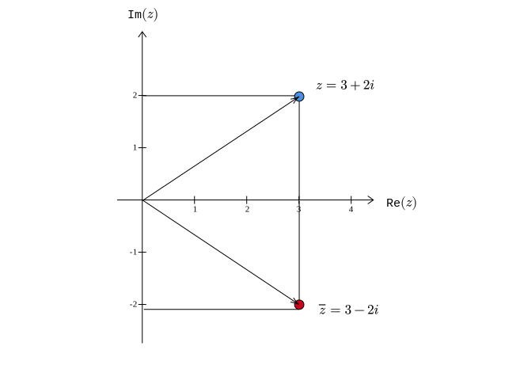
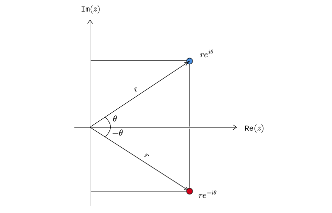

Complex Numbers
Introduction
A complex number is of the form \(a+ib\), where \(a\) and \(b\) are real numbers and \(i^{2} =-1\). Some examples are:
\(2+3i\)
\(5-10i\)
\(-i\)
\(5i\)
\(4\)
The set of complex numbers is denoted by \(\mathbb{C}\). Every real number is a complex number. But every complex number need not necessarily be a real number. In terms of set theoretic notation, \(\mathbb{R} \subset \mathbb{C}\) but \(\mathbb{C} \not \subset \mathbb{R}\).
A complex number has two parts to it: real and imaginary part. For the complex number \(2+3i\), the real part is \(2\) and the imaginary part is \(3\). Any complex number \(z\) can be written as: \[ \boxed{z=\text{Re}( z) +\text{Im}( z) \cdot i} \] We can understand complex numbers geometrically by plotting the real part on the x-axis and the imaginary part on the y-axis.
This plane is called the complex plane, also called the Argand plane or Gauss plane.
Algebra
The following are some of the operations that we can do on complex numbers:
- addition (subtraction)
- multiplication (division)
- absolute value or modulus
- conjugate
We will look at each one of these operations.
Addition
Consider two complex numbers \(z_{1} =a_{1} +ib_{1}\) and \(z_{2} =a_{2} +ib_{2}\). Then:
\[ \begin{equation*} z_{1} +z_{2} =( a_{1} +a_{2}) +i( b_{1} +b_{2}) \end{equation*} \] To add two complex numbers, we add the real part separately and the imaginary part separately. For example:
\[ \begin{aligned} (1 + 3i) + (-5 - 2i) &= (1 - 5) +i(3 - 2)\\ &= -4 + i \end{aligned} \] Subtraction follows trivially. To compute \(z_{1} -z_{2}\), we can just compute \(z_{1} +( -z_{2})\).
Multiplication
Consider two complex numbers \(z_{1} =a_{1} +ib_{1}\) and \(z_{2} =a_{2} +ib_{2}\). Then:
\[ \begin{equation*} \begin{aligned} z_{1} z_{2} & =( a_{1} +ib_{1})( a_{2} +ib_{2})\\ & =a_{1} a_{2} +a_{1}( ib_{2}) +( ib_{1}) a_{2} +i^{2} b_{1} b_{2}\\ & =a_{1} a_{2} +i( a_{1} b_{2}) +i( a_{2} b_{1}) -b_{1} b_{2}\\ & =( a_{1} a_{2} -b_{1} b_{2}) +i( a_{1} b_{2} +a_{2} b_{1}) \end{aligned} \end{equation*} \] As an example, if \(z_{1} =3-2i\) and \(z_{2} =5+i\), then:
\[ \begin{gather*} \begin{aligned} z_{1} z_{2} & =( 3\times 5-( -2) \times 1) +i( 3\times 1+( -2) \times 5)\\ & =17-7i \end{aligned}\\ \end{gather*} \] Before moving to division, let us look at the idea of the absolute value of a complex number.
Absolute Value
The absolute value of a complex number \(z=a+ib\) is given by: \[ \begin{equation*} |z|=\sqrt{a^{2} +b^{2}} \end{equation*} \] Geometrically, we can think about it as the distance of \(z\) from the origin. For example, if \(z=3+2i\), then \(|z|=\sqrt{3^{2} +2^{2}} =\sqrt{13}\). The complex number (blue dot) is at a distance of \(\sqrt{13}\) units from the origin.
Another term for the absolute value is modulus. The absolute value of a complex number is always going to be a real number.
Conjugate
The conjugate of a complex number \(z=a+ib\) is denoted by \(\overline{z}\) and given as:
\[ \overline{z} = a - ib \] For example, if \(z=3+2i\) then \(\overline{z} =3-2i\). Geometrically, \(\overline{z}\) is the reflection of \(z\) around the x-axis:

The following is an interesting relation:
\[ \begin{equation*} z\overline{z} =|z|^{2} \end{equation*} \] To see why this is true, consider any complex number \(z=a+ib\). Then:
\[ \begin{equation*} \begin{aligned} z\overline{z} & =( a+ib)( a-ib)\\ & =a^{2} -a( ib) +( ib) a-i^{2} b^{2}\\ & =a^{2} -i( ab) +i( ab) +b^{2}\\ & =a^{2} +b^{2} \end{aligned} \end{equation*} \] Here is an observation related to conjugates that will be used quite extensively in subsequent lectures: \(z=\overline{z}\) if and only if \(z\) is a real number. To see why this is true, let \(z=a+ib\). If \(z\) is a real number, then \(b=0\), and it is obvious that \(z=\overline{z} =a\). On the other hand, if \(z=\overline{z}\), then we have:
\[ \begin{equation*} \begin{aligned} a+ib & =a-ib\\ i( 2b) & =0\\ \Longrightarrow b & =0 \end{aligned} \end{equation*} \] It follows that \(z=a\) and hence a real number.
Division
Let us try to divide two complex numbers \(z_{1} =a_{1} +ib_{1}\) and \(z_{2} =a_{2} +ib_{2}\) with \(z_{2} \neq 0\): \[ \begin{equation*} \begin{aligned} \cfrac{z_{1}}{z_{2}} & =\cfrac{a_{1} +ib_{1}}{a_{2} +ib_{2}}\\ & =\cfrac{a_{1} +ib_{1}}{a_{2} +ib_{2}{}} \cdot \cfrac{a_{2} -ib_{2}}{a_{2} -ib_{2}}\\ & =\cfrac{( a_{1} +ib_{1})( a_{2} -ib_{2})}{a_{2}^{2} +b_{2}^{2}}\\ & =\cfrac{a_{1} a_{2} +b_{1} b_{2}}{a_{2}^{2} +b_{2}^{2}} +i\cdot \cfrac{a_{2} b_{1} -a_{1} b_{2}}{a_{2}^{2} +b_{2}^{2}} \end{aligned} \end{equation*} \]
Polar Coordinates
Consider a complex number \(z = a + ib\)
Using basic trigonometry, we have the following relations:
\[ \begin{gather*} \begin{aligned} r & =\sqrt{a^{2} +b^{2}}\\ & \\ \cfrac{a}{r} & =\cos \theta \\ & \\ \cfrac{b}{r} & =\sin \theta \end{aligned}\\ \end{gather*} \] Alternatively, we have: \[ \begin{equation*} \begin{aligned} a & =r\cos \theta \\ b & =r\sin \theta \end{aligned} \end{equation*} \] So, the complex number \(z\) can be written as:
\[ \begin{equation*} \begin{aligned} z & =a+ib\\ & =r\cos \theta +i( r\sin \theta )\\ & =r(\cos \theta +i\sin \theta ) \end{aligned} \end{equation*} \] The following result is stated without proof. If \(e\) is the familiar Euler’s number, then: \[ \begin{equation*} e^{i\theta } =\cos \theta +i\sin \theta \end{equation*} \] Using this result, we can write \(z\) as:
\[ \begin{equation*} z=re^{i\theta } \end{equation*} \] \(r\) is the absolute value of \(z\) and \(\theta\) is called the argument of \(z\). This way of representing a complex number using its modulus (absolute value) and argument is called the polar coordinate representation. Using this representation, the conjugate of \(z=a+ib\) can be written as follows:
\[ \begin{equation*} \begin{aligned} \overline{z} & =a-ib\\ & =r(\cos \theta -i\sin \theta )\\ & =r[\cos( -\theta ) +i\sin( -\theta )]\\ & =re^{-i\theta } \end{aligned} \end{equation*} \] We have used the fact that \(\cos(-\theta ) =\cos \theta\) and \(\sin(-\theta ) =-\sin \theta\). The geometric interpretation of the conjugate under the polar coordinates is as follows:
